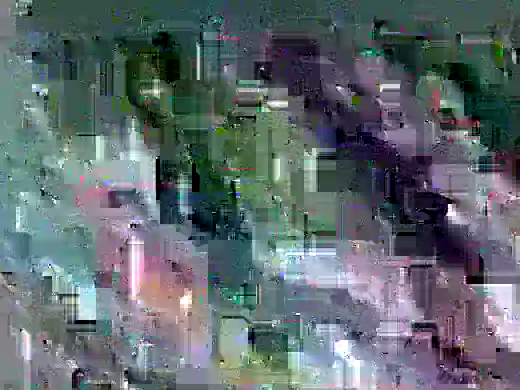

Anatomía de una ruta
Una noche, dos hornos y una cocina en movimiento.
Este modelo ilustrativo muestra cómo podría organizarse un servicio para 120 invitados, con una carta corta, producción continua y preparación frente al público.
El reto operativo
Servir a 120 personas sin convertir la pizza en una fila.
La velocidad no se resuelve únicamente agregando hornos. Depende de lo que ocurre antes: masa dividida correctamente, ingredientes dosificados, estaciones claras, una carta diseñada para rotar y un equipo que conoce la secuencia completa.
La meta no es producir pizzas de manera aislada. Es sostener un flujo continuo mientras el evento conserva naturalidad y los invitados pueden participar de la escena.
Diseño del servicio
La velocidad se construye antes de encender el horno.
La operación distribuye las decisiones para que el equipo no improvise durante los momentos de mayor demanda.
Preparación por tandas
Masa, ingredientes, porciones y acabados se organizan para reducir movimientos y decisiones durante el servicio.
Rotación de sabores
Las pizzas alternan siguiendo una secuencia definida para ofrecer variedad sin detener la producción por pedidos individuales.
Comunicación clara
El menú y la dinámica se explican desde el inicio para que los invitados comprendan cómo funciona la experiencia.
Estaciones definidas
Apertura, montaje, horno, acabado, corte y salida tienen responsabilidades y superficies específicas.
Control de ritmo
El equipo observa concentración de invitados, tiempos por tanda y recuperación de los hornos.
Cierre documentado
Inventario, mermas, residuos, desmontaje y aprendizajes completan la ruta.
Una carta para operar bien
Variedad suficiente. Complejidad controlada.
La selección debe cubrir perfiles distintos sin multiplicar ingredientes, decisiones y tiempos innecesarios.
Margherita
Una referencia clara, reconocible y rápida de comunicar.
Diavola
Una opción intensa y picante para ampliar el perfil de la carta.
Bosque
Una receta vegetal con profundidad y presencia completa.
La Errante
La pizza de firma que conecta la experiencia con la identidad de la marca.
Lo que medimos
Cada ruta deja información para diseñar mejor la siguiente.
Flujo
Tiempo por tanda, momentos de mayor demanda, concentración de invitados y continuidad del servicio.
Producto
Consumo por sabor, merma, comportamiento de la masa, temperatura, ingredientes y acabados.
Experiencia
Claridad del menú, interacción con la unidad, percepción del ritmo y relación de la cocina con el evento.
Diseñemos tu ruta
Cada lugar cambia la operación.
Accesos, horarios, invitados, menú, clima y servicios disponibles definen el formato correcto.
Solicitar cotización